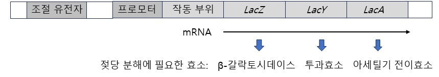

문제 1
<제시문 1> 대장균은 젖당 오페론을 이용하여 젖당이 있을 때, 젖당 분해에 필요한 3가지 효소(β-갈락토시데이스, 투과효소, 아세틸기 전이효소)들을 합성한다.
<제시문 2> 단백질 합성은 개시, 신장, 종결 과정을 거쳐 합성된다.
다음은 젖당 오페론에 돌연변이가 발생한 두 종류의 대장균을 배양한 결과이다.

| 젖당이 없는 배지에서 배양 | 젖당이 있는 배지에서 배양 | |||
|---|---|---|---|---|
| 대장균 | 억제 단백질의 기능 및 발현 | 젖당분해 3가지 효소 | 억제 단백질의 기능 및 발현 | 젖당분해 3가지 효소 |
| 돌연변이 1 | 정상/발현됨 | 발현됨 | 정상/발현됨 | 발현됨 |
| 돌연변이 2 | 정상/발현됨 | 발현 안 됨 | 정상/발현됨 | 발현 안 됨 |
1-1
돌연변이 1 대장균의 경우 젖당 오페론의 어디에서 돌연변이가 발생했을 가능성이 가장 큰지 근거를 제시하고 설명하시오.
1-2
돌연변이 2 대장균의 경우 젖당 오페론의 어디에서 돌연변이가 발생했을 가능성이 가장 큰지 근거를 제시하고 설명하시오.
1-3
젖당 오페론에 있는 β-갈락토시데이스는 1024개의 아미노산으로 이루어져 있고, 그 중 101번째 아미노산인 타이로신을 지정하는 코돈은 UAU이다. 만약 UAU의 세 번째 염기가 A로 바뀌었다면, 젖당 분해에 필요한 3가지 효소 각각의 양은 정상 코돈이 있는 경우와 비교하여 어떻게 달라지는지 설명하고 그 근거를 제시하시오. (단, 대장균은 젖당만 있는 배지에서 배양하고 있다.)